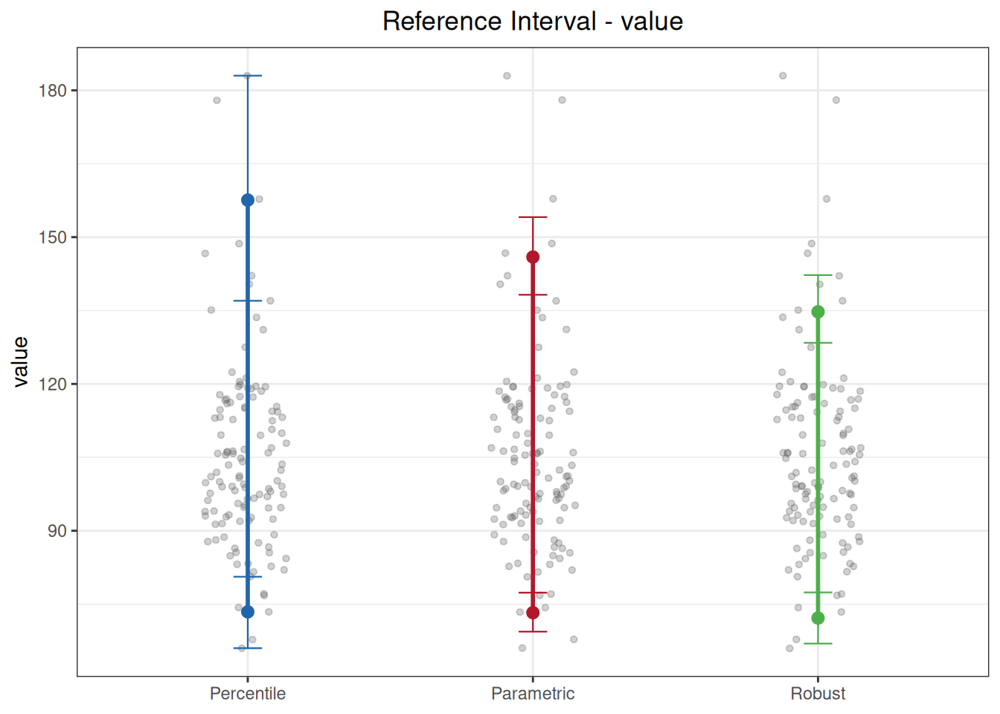

代码
library(ivdtools)
library(readr)参考区间（reference interval，RI）由参考样本群体的测量结果界定，用于解释个体结果的正常范围， 对应 CLSI EP28-A3c。ivdtools 提供三种方法：百分位数法（nonparametric）、参数法（parametric， 正态或对数正态）、稳健法（robust）。三种方法对样本量、分布形态和离群值的敏感性不同，建议同时对 同一数据应用多种方法进行比较，并在建立参考区间前先做异常值检测与正态性评估。
本文演示用 outliers_test() 与 normal_test() 做预先分析，再调用 reference_interval(method = "all") 同时输出三种方法的参考区间。示例数据为确定性的教学数据（n=120，轻度右偏并含离群值）。
library(ivdtools)
library(readr)| 函数 | 主要用途 | 关键输入或输出 |
|---|---|---|
outliers_test() |
异常值检测 | Grubbs / ESD / Dixon / IQR |
normal_test() |
正态性检验与图形 | method="auto" 按样本量选检验 |
reference_interval() |
三种方法参考区间 | method="all"、interval、ci、id |
plot.reference_interval() |
分方法绘制区间 | jitter + 上下限 |
ri_data <- read_csv("./data/reference-interval.csv", show_col_types = FALSE)
ri_data <- as.data.frame(ri_data)
str(ri_data)'data.frame': 120 obs. of 2 variables:
$ id : chr "S001" "S002" "S003" "S004" ...
$ value: num 131.1 100.8 106 74.3 116.9 ...EP28 建议在建立参考区间前审查离群值。样本量 n=120，不适合 Dixon（Dixon 仅适用于 n≤30）， 使用 Grubbs 与广义 ESD：
outliers_test(ri_data, col = "value", method = "grubbs")Grubbs Outliers Test
Data: ri_data
Column: value (n = 120, missing = 0)
Parameters: alpha = 0.05
Outliers: 1
Index Value G stat Critical
-------------------------------------------
88 183.0000 4.0104 3.4451outliers_test(ri_data, col = "value", method = "esd", r = 3)Generalized ESD Outliers Test
Data: ri_data
Column: value (n = 120, missing = 0)
Parameters: alpha = 0.05, r = 3
Outliers: 2
Index Value R stat Critical
-------------------------------------------
88 183.0000 4.0104 3.4451
57 178.0000 4.0576 3.4424参数说明：
outliers_test()的method可选"grubbs"、"esd"、"dixon"、"iqr"； ESD 通过r指定最多检出数，Dixon 通过type指定尾部（"both"/"min"/"max"），IQR 通过coef指定倍数（默认 1.5）。检测到离群值不代表应删除——应回查原始记录、实验过程与方案规定， 在有充分理由时进行包含/不包含的敏感性分析。
nt <- normal_test(ri_data, col = "value", method = "auto")
nt
Normality Test
Data: ri_data
Column: value (n = 120, missing = 0)
Method: Anderson-Darling
A = 1.7577, p = 0.0002plot(nt, type = c("qq", "his"))

method="auto" 对 n=120 自动选择 Anderson-Darling 检验，p 值很小，提示数据不服从正态分布 （该数据右偏并含离群值）。QQ 图与直方图可直观确认偏态。
ri <- reference_interval(
ri_data,
col = "value",
interval = 0.95,
ci = 0.95,
method = "all",
id = "id"
)
print(ri)
Reference Interval Analysis
Column: value
Reference interval: 95% (alpha = 0.025)
Confidence level: 0.95
ID variable: id
Complete cases: 120 / 120
No missing values.
No duplicate IDs found.
Percentile (quantile type 6, CLSI EP28-A3c)
Lower = 73.4225 [66.0000, 80.6000]
Upper = 157.5725 [137.0000, 183.0000]
Parametric (log-transformed, Shapiro-Wilk p = 0.0661)
Lower = 73.2539 [69.3807, 77.3434]
Upper = 145.9407 [138.2241, 154.0880]
Robust (Huber M-estimation (k=1.5, 16 iter) + MAD)
Lower = 72.1573 [66.9399, 77.3919]
Upper = 134.7365 [128.4016, 142.2446]plot(ri)
参数说明：
reference_interval()中interval是参考区间覆盖度（默认 0.95，对应 2.5%–97.5%），ci是区间端点的置信水平，两者含义不同。method可取"percentile"、"parametric"、"robust"、"all"或其中任意组合。id用于重复样本检测。
本示例三种方法结果比较：
transformed=TRUE）再回代；百分位法上限明显高于稳健法，正是离群值影响的表现。参考区间应在样本来源、样本量、分布特征与研究 方案指导下选择报告方法，不宜只挑结果”好看”的一种。
interval（覆盖度）与 ci（端点置信度），不要混用。